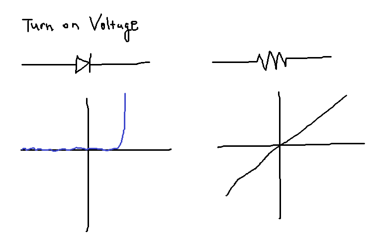
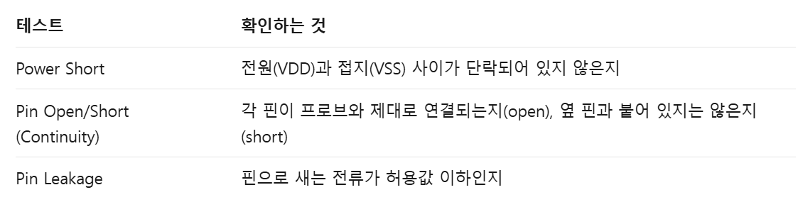
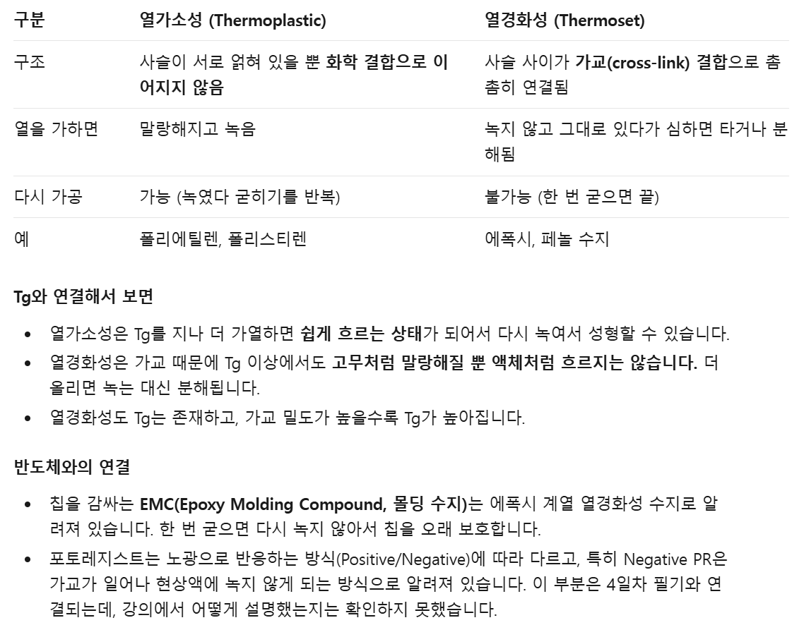
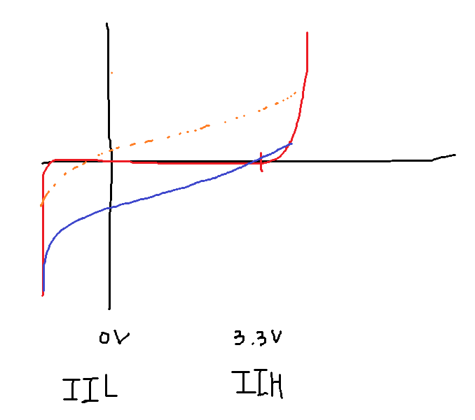

더인 교육 15일차
1. 신소재공학과에서 외우면 좋을 만한 것들
- 실습 내용 메모장에 있음
- 소재들의 특징, 종류 인지
- 고분자 소재의 사용 용도. 대표적인 반도체에서 사용되는 고분자의 특징. PR이나 패키징에 사용되는 고분자 정도만 따로 정리해도 좋을 듯
- 전기전도도, 밴드갭, 비저항 값들
- 그리고 오늘 수업들은 것에서는 정말 기본적인 것들만 취하면 될 듯 (내 분야가 이런쪽은 아니라는 것을 확신 할 수 있었음)
- 오늘 실습은 레포트 딱히 안만들겠지만, 스터디나 마지막 프로젝트 진행했던 내용은 잘 정리해두는게 좋을 것 같다. (스터디를 했다? 끝이면 시간 낭비 → 스터디를 통해 무엇을 얻어갔다! 가 포트폴리오로 정리하자)
2. 신소재가 전문으로 할 수 있어야 함 (전 유기쪽인데요;)
3. 금속 전기전도도 순서
Ag > Cu > Au > Al ≫ W
- 은 부식 때문에 사용하지 X
- Cu는 전해도금 방법으로 증착
4. PN 접합
- 전기전자 전공의 고유 영역 (소자를 한다면 알아야 한다)
5. 전압
- 수압과 같은 개념이라서 1 → 0 과 0 → −1 차이 모두 1V이다.

6. DRAM
- 모바일용 - LPDDR (Low power)
- PC용 - DDR
7. EDS
- Wafer 1개에 살릴 수 있는 테스트할 만한 Die는 1500개?
- EDS 테스트를 할 때 Power short, Pin open/short, Pin Leakage가 가장 기본적인 테스트
– 품질 분야에서도 알면 좋다.

8. Parameter Analyzer (파라미터 분석기)
9. Transistor
- Vth (문턱 전압)
- Isat (포화 전류)
- Ioff (누설전류)
- Q = I²Rt (줄 열)
- 열이 생기면서 박살나는 것이 뻔트가 난다고 한다.
- Open 단선
- Short 단락
10. 정전기 (Electrostatic)
- 정전기는 주로 핀으로 들어온다.
- 정전기는 +, - 상관없이 들어온다.
- 정전기 보호 셀이 필요하다.
11. Open과 Short가 일어나는 이유?
- 배선 면적의 99%를 차지하는게 Power line이다. Vdd와 Vss 사이의 길이는 실질적으로 짧다? 하여간 외부에서 power를 인가하고 그게 내부의 낮은 층수로 연결되기까지가 배선이 긴 것임
- Vdd와 Vss 사이에 defect이 앉으면 short가 일어난다. 근데 이게 pin 이면 pin short가 된다?
대상: “근데 이게 pin 이면 pin short가 된다?”
무슨 소릴까?
12. 반도체 패키징
- 유리전이 온도 Tg 고분자 사슬의 일부가 움직일 수 있게 되고, 고무 상태가 되는 것을 말한다.
- 칩을 감싸는 에폭시?

13. Capacitance 감소가 되면 다른 값들은 어떻게 되는가?
(1) 문턱전압이 높다.
Vth = VFB + 2φF + QdepCox
(Qdep = √2εSi q NA (2φF) : 공핍층 전하, Cox = εox / tox : 산화막 커패시턴스)
(2) Isat 감소한다 → 성능이 떨어진다.
Isat = 12 μ Cox WL (VGS − Vth)²
(3) Ioff 증가한다.
서브문턱 기울기: S = kTqln 10(1 + CdepCox) (Cdep : 공핍층 커패시턴스)
Ioff ≈ I₀ · 10−Vth/S

<반도체 카페에서 다시 확인>
내가 지원하는 직무 -> 직무필요역량이 ~이라고 생각합니다 -> 그래서 학부 때 어떤 수업을 들었고, 어떤 온라인 교육을 들었습니다 -> 그리고 +a로 공정실습이나 000을 했습니다
그리고 필요하면 논문을 몇 편 읽어서 정리하거나, SEM 등의 사진도 정리했습니다. → 포트폴리오를 만드는 방법에 대해 알려주신 것임
<Flow>
직무 선정 -> 직무필요역량 -> 학부 때 이걸 했다 -> +a
14. 생각정리
1. 노트 만들 때 남들 다 할 수 있는 정도로 정리해서 말할거면 의미 없다.
2. 공부할 때 논문도 같이 읽었으면 옆에 잘 메모해두기